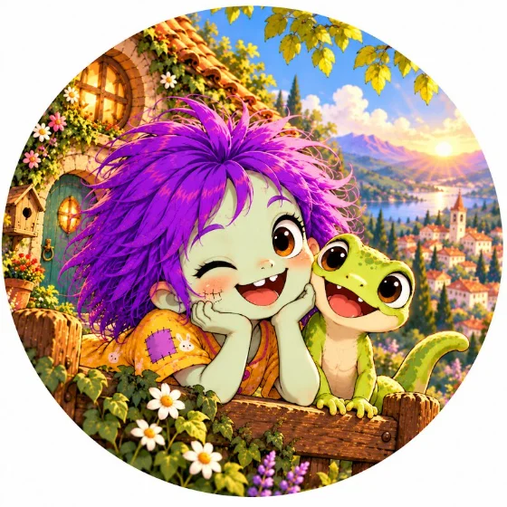
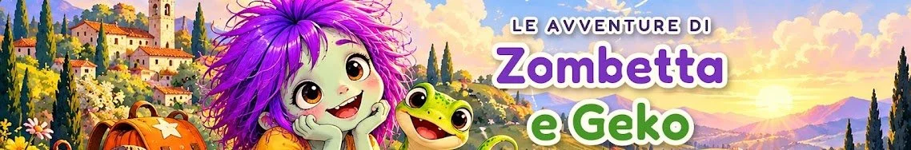
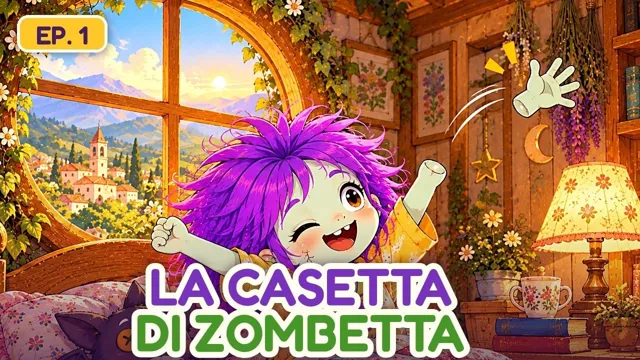
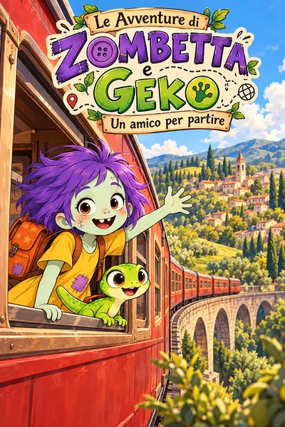

Zombetta
Capelli viola, toppe colorate e un sorriso che non si spegne. Affronta ogni giornata con allegria, anche quando le cose non vanno come previsto.
Zombetta è una bambina zombie con i capelli viola, il sorriso facile e una valigia sempre pronta. Geko è il geco che le sta accanto. Insieme partono per avventure piene di amicizia, sorprese e piccoli misteri da risolvere un indizio alla volta.

Vol. 1 in lavorazione
Zombetta non è una bambina triste che fa paura agli altri: è serena, curiosa e piena di voglia di fare. Le sue avventure parlano di amicizia, di come si trova il proprio posto e di quanto possano essere importanti le persone che ci vogliono bene.
Capelli viola, toppe colorate e un sorriso che non si spegne. Affronta ogni giornata con allegria, anche quando le cose non vanno come previsto.
Un geco vivace e sempre presente. Dove va Zombetta, va anche lui: a volte per aiutarla, a volte per combinare guai insieme.
La serie è pensata in pochi volumi, con un mistero che si scopre poco alla volta e che si conclude. Gli indizi sono sparsi lungo il cammino.
Le avventure diventano anche brevi episodi animati, pubblicati sul canale dedicato.

Il primo episodio della serie: si entra nella casetta di Zombetta e si comincia a conoscerla.
Il video si carica da YouTube solo quando premi play.

Il primo libro illustrato della serie racconta l'inizio di tutto: come Zombetta e Geko si incontrano e perché decidono di partire insieme.
Quando sarà pronto lo troverai su Amazon, e qui su questa pagina.
Questa pagina crescerà insieme alla serie: nuovi episodi, illustrazioni e l'uscita del libro.